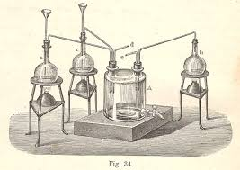
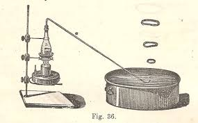

Parlando recentemente dell'acqua borica ho voluto accennare alla buon'anima di mia nonna Beatrice, la quale, grazie alla sua immancabile bottiglia di H3BO3 nell'armadio, ritengo che abbia in qualche modo contribuito all'impianto del virus chimico nell'allora verde e incontaminato DNA del sottoscritto.
Ma questa della nonna fu solo una secondaria "infezione" fra le tante che mi colpirono chimicamente in tenera età: sono sicuro che il vero "innesto", se così si può dire, che modificò per sempre e irreversibilmente la mia "doppia elica" fu cagionato dalla precocissima lettura del libro che si vede qui sotto.

Il prof. S.Squinabol, illustre geologo di Rovereto, era certo una mente eclettica (una parte di merito va certo riconosciuta anche al prof. Cresci) perchè questo bel tomo targato 1898 contiene argomenti di chimica, di fisica, di mineralogia e di elettrologia, tutti descritti in maniera semplice e accattivante, e nello stesso tempo esauriente quanto basta agli scopi del libro, che era destinato agli alunni (nel caso dei miei bisnonni, di Rovereto) delle allora "scuole normali", corrispondenti alle classi superiori di oggi.
Le immagini di questi libri sono tutti piccoli capolavori tecnici di disegno e ombreggiatura, che rendono l'oggetto rappresentato molto più significativo di una cruda fotografia; ne propongo due come esempio: la simulazione in laboratorio delle camere a piombo per la produzione dell'acido solforico

e la generazione artificiale dei "fuochi fatui" (ovvero delle fosfine PH3 e P2H4), con gli immancabili anelli di fumo che si innalzano dal recipiente pieno d'acqua!

Ma il libro è pieno di immagini simili, su ogni argomento trattato: dalla pistola di Volta innescata con una macchina elettrostatica, al fonografo di Edison fresco di invenzione, alla macchina di Carrè per fabbricare il ghiaccio, fino alla più spinta avanguardia: il telegrafo senza fili, fresco... di concezione!
Potevo, io bimbo non ancora vaccinato a niente (ma certamente "presensibilizzato" per cause ignote), rimanere insensibile a reiterate e reiterate letture del libro del bisnonno?
Avrei potuto resistergli? No, impossibile! Tant'è che ancora oggi ogni tanto me lo guardo...